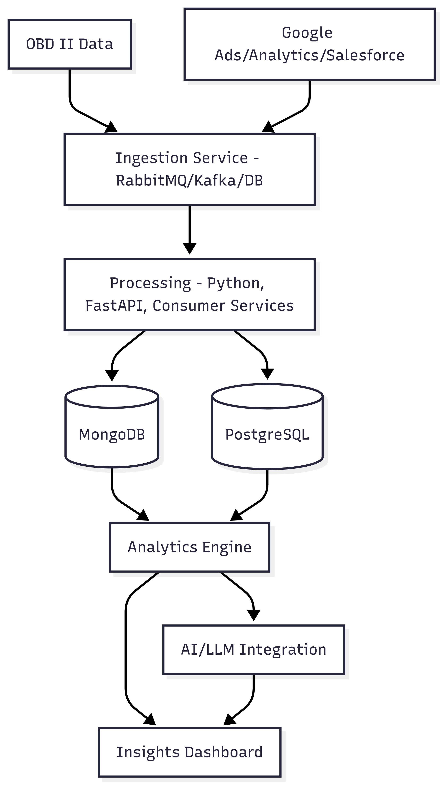

Projects
Principal Data Engineer Portfolio
Experienced in designing and building scalable data architectures, leading engineering teams, and delivering impactful data solutions for business growth.
Deep View Analytics Platform
A versatile data science and analytics platform built from scratch to support automotive, marketing, and sustainability use cases. The platform ingests, processes, and analyzes high-frequency data from vehicles and digital marketing sources, providing actionable insights for businesses and fleet owners.
- Designed and developed the platform architecture for scalable analytics across automotive and marketing domains.
- Implemented dynamic data processing for OBD II vehicle data, Google Ads, Google Analytics, and Salesforce.
- Containerized all services for easy horizontal scaling and cloud/on-premise deployment.
- Enabled insights on vehicle health, driver behavior, road conditions, and digital marketing performance.
- Powered C6-Insights for carbon tracking and sustainability analytics, integrating AI for actionable recommendations.
- Mentored engineers on big data, RESTful design, and DevOps automation.

QLM (Queue Length Management)
An AI-powered application designed to monitor live video feeds of queues, automatically counting people and alerting supervisors when queue length exceeds thresholds. Developed as a POC for MORE hypermarkets to optimize service counter management.
- Designed and implemented the AI-powered queue monitoring system using computer vision.
- Developed real-time alerting for supervisors to optimize service counter allocation.
- Integrated the system with live video feeds and deployed as a proof of concept for retail environments.
- Improved customer experience and operational efficiency for hypermarkets.

Self Analytics
A web-based application built over an analytical engine to empower data scientists in feature engineering for machine learning models. The tool automates resource creation and feature selection, streamlining the model development process.
- Developed a web application for in-house data scientists to create and select features for ML models.
- Automated the generation of valuable resources for datasets, enhancing productivity and model quality.
- Integrated with NEC-LABS USA's analytical engine for advanced feature engineering.
- Enabled rapid prototyping and experimentation for data science teams.
NEC IoT Big Data Solution
A project to deploy big data technology stack on NEC's Micro Modular Server (MMS), providing end users with powerful analytics capabilities while abstracting system complexities. Enabled scalable, user-friendly big data solutions for IoT applications.
- Deployed and configured big data stack on NEC's Micro Modular Server for IoT analytics.
- Abstracted system complexities, enabling end users to leverage big data without deep technical knowledge.
- Enhanced accessibility and scalability of big data resources for IoT use cases.
PAOS (Predictive Auto Ordering System)
A recommendation engine that predicts optimal inventory levels for products based on sales data, minimizing losses from shortages and overstocking. Leveraged proprietary ML tools and frameworks to deliver actionable insights for inventory management.
- Developed a recommendation engine to predict optimal inventory levels using sales data.
- Built and optimized models for each product, reducing losses from shortages and overstocking.
- Overcame limitations of the SAMPO framework by optimizing application architecture for performance and parallelization.